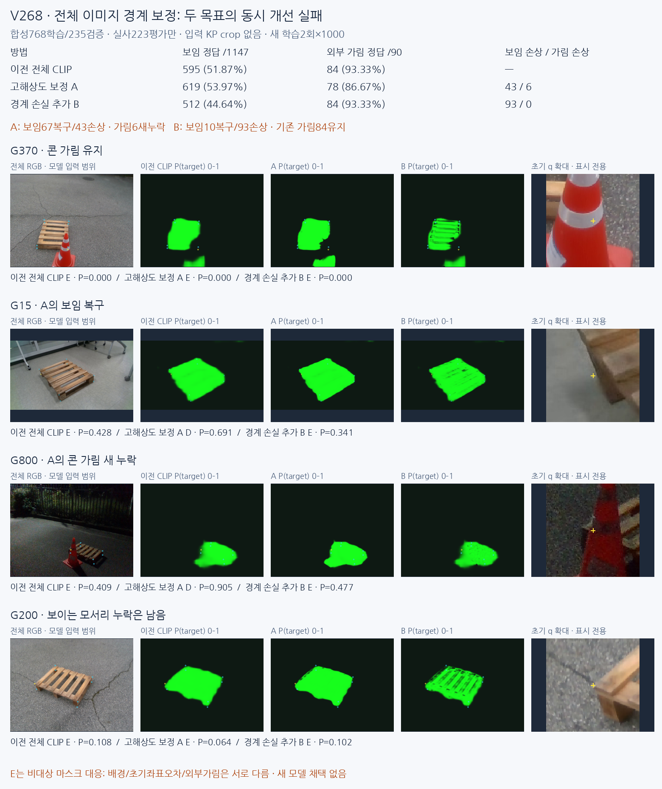

A는 보이는 점67개를 복구했지만43개를 새로 놓쳐 정답595→619, 외부 가림은84→78로 줄었습니다. B는 가림84개를 유지했지만 보임 정답이512개로 줄었습니다. 새 모델이나 게이트를 채택하지 않았습니다. 계획한 두 학습 이후 추가 fit·문턱 조정은 없습니다.
전체 이미지 방식 유지, 원래 합성768학습/235검증, 실사223평가만입니다. KP crop으로 입력하지 않았습니다. 전체 RGB512→평균256과 동결된 전체512 CLIP32특징/기존32logit를 읽어 새256지도를 만들었습니다. 아래 crop은 표시 전용입니다.
실사111사례 전체 영상·3방식 확률/마스크·확대 · 원본 합성 M4/예측 대조 · 재현 안내 · 학습 전 동결 조건

D=보임, E=외부 가림 주석에 비대상 마스크를 대응한 MASK_PRESENCE_PROXY, U=입력 불가입니다. 실제 외부 가림 원인을 별도로 학습한 분류기가 아닙니다. 자기 가림은 E와 합치지 않았습니다. PRIMARY1237=D1147/E90; 새 모델U0, 전체1784의 기존45U 보존. 과거 실사학습 모델의 CAL 노출 이력도 유지합니다.
| 방식 | D→D/E/U | E→D/E/U | D P% | D R% | E P% | E R% | 보류% |
|---|---|---|---|---|---|---|---|
| 이전 전체 CLIP | 595/552/0 | 6/84/0 | 99.00 | 51.87 | 13.21 | 93.33 | 0.00 |
| 고해상도 보정 A | 619/528/0 | 12/78/0 | 98.10 | 53.97 | 12.87 | 86.67 | 0.00 |
| 경계 손실 추가 B | 512/635/0 | 6/84/0 | 98.84 | 44.64 | 11.68 | 93.33 | 0.00 |
| 이전 V264 | 1028/119/0 | 67/23/0 | 93.88 | 89.63 | 16.20 | 25.56 | 0.00 |
| 이전 v61 | 260/887/0 | 2/88/0 | 99.24 | 22.67 | 9.03 | 97.78 | 0.00 |
| 과거 실사학습 모델 | 655/319/173 | 3/83/4 | 99.54 | 57.11 | 20.65 | 92.22 | 14.31 |
| 방식 | D→D/E/U | E→D/E/U | D P% | D R% | E P% | E R% | 보류% |
|---|---|---|---|---|---|---|---|
| 이전 전체 CLIP | 307/309/0 | 2/27/0 | 99.35 | 49.84 | 8.04 | 93.10 | 0.00 |
| 고해상도 보정 A | 336/280/0 | 5/24/0 | 98.53 | 54.55 | 7.89 | 82.76 | 0.00 |
| 경계 손실 추가 B | 294/322/0 | 2/27/0 | 99.32 | 47.73 | 7.74 | 93.10 | 0.00 |
| 이전 V264 | 510/106/0 | 18/11/0 | 96.59 | 82.79 | 9.40 | 37.93 | 0.00 |
| 이전 v61 | 145/471/0 | 0/29/0 | 100.00 | 23.54 | 5.80 | 100.00 | 0.00 |
| 과거 실사학습 모델 | 448/65/103 | 2/23/4 | 99.56 | 72.73 | 26.14 | 79.31 | 16.59 |
| 방식 | D→D/E/U | E→D/E/U | D P% | D R% | E P% | E R% | 보류% |
|---|---|---|---|---|---|---|---|
| 이전 전체 CLIP | 288/243/0 | 4/57/0 | 98.63 | 54.24 | 19.00 | 93.44 | 0.00 |
| 고해상도 보정 A | 283/248/0 | 7/54/0 | 97.59 | 53.30 | 17.88 | 88.52 | 0.00 |
| 경계 손실 추가 B | 218/313/0 | 4/57/0 | 98.20 | 41.05 | 15.41 | 93.44 | 0.00 |
| 이전 V264 | 518/13/0 | 49/12/0 | 91.36 | 97.55 | 48.00 | 19.67 | 0.00 |
| 이전 v61 | 115/416/0 | 2/59/0 | 98.29 | 21.66 | 12.42 | 96.72 | 0.00 |
| 과거 실사학습 모델 | 207/254/70 | 1/60/0 | 99.52 | 38.98 | 19.11 | 98.36 | 11.82 |
모든 평가군72행 CM/P/R/U · 자기 가림18행 · 1784점 결과 · 가림90점 전이
G370/G908/G1515의 콘 제외는 유지합니다. A는 G15/G904 등 일부 보이는 모서리를 회복하지만, G800/G803/G837/G1274/G1692/G1772의 가림을 새로 D로 읽습니다. 실제 영상에서 밤의 콘 몸체와 낮의 받침 경계까지 대상 영역이 넓어지는 사례가 있습니다. G1274에서는 배경의 파란 덮개에도 대상 반응이 늘어납니다.
G1692/G1772의 초기 q에는 다른 보이는 팔레트 부분이 섞이며, 가려진 해당 native 참조점과는13.91/32.46px 떨어집니다. 이 둘을 명백한 콘 몸체 오분할이라고 부르면 안 됩니다. 특정 코너 가시성 주석과 현재 픽셀의 대상 존재가 다른 구체 사례입니다. 단일 원인으로 모든 새 누락을 설명하지 않았습니다.
G200은 초기 오차1.77px인 보이는 점인데 세 방법 모두 E입니다. B의 지도는 슬랫·빈틈을 더 자세히 구분해 보여도 native q의 보임 정답이 되는 것은 아닙니다. 실사 픽셀 GT가 없으므로 시각적으로 자세한 지도가 더 정확하다고 확정하지 않습니다. G996의 사용자 판단/기존 E 주석 이견은 그대로 유지했습니다.
초기 오차≤3px인 수동 보임376점의 정답은 이전194/A209/B166입니다. A는24복구/9손상, B는4복구/32손상입니다. 위치 오차만으로 실패 전체를 설명할 수 없고, 정확한 픽셀 분할과 의미상 코너 보임의 차이가 남습니다.
아래는 같은 합성 DEV235장의 원래 해상도 M4 기준입니다.32와256 target-grid IoU를 직접 비교하지 않았습니다. 경계는 원영상1px/3px 허용 P/R을 모두 계산했으며 문턱이나 허용 반경을 선택하지 않았습니다.
| 방식 | 원본 픽셀 micro IoU% | 경계F1@1px% | 경계F1@3px% |
|---|---|---|---|
| 이전 CS | 65.29 | 12.52 | 24.99 |
| 고해상도 A | 66.01 | 13.57 | 27.41 |
| 경계 B | 67.30 | 18.99 | 34.94 |
B의 합성 IoU 증가는 FP1,179,713→985,444 감소와 함께 FN619,015→645,409 증가도 포함합니다. 분할 IoU와 native 보임 recall은 같은 목표가 아닙니다. 작은 어두운 팔레트 미검출, 다른 팔레트 선택, 목재 무늬를 구멍처럼 깎는 문제도 남습니다. 실사 분할 IoU는 GT가 없어 보고하지 않습니다.
동결된 V267 CLIP Surgery 영상 구조 특징과 기존 head는 학습하지 않았습니다. 새26177개 파라미터 full-frame refiner 두 개만 같은 초기값·배치·seed17로 각1000업데이트했습니다. M4 원PNG>127→512bilinear antialias→평균256의 soft target을 새로 만듭니다. A=BCE+Dice, B=동일 손실+0.5양쪽 경계 균형 BCE입니다. 경계 band는 손실 가중치에만 쓰며 정답이나 출력 마스크를 팽창시키지 않습니다.
새 지도는 기존32logit를256으로 보간한 값+6tanh(새 residual/6)입니다. 같은256격자의 기존|logit|>6에서 부호 보존을 검증했습니다. 기존32에서 직접 읽는 q와256으로 다시 보간한 q는 완전히 같지 않아, 학습 없는 재보간만의 판정 변화2/1739점도 별도 기록했습니다. 이 수치로 정책을 선택하지 않았습니다.
두 final1000을 합성 DEV 평가 전에 동결하고 실사 지도·1784점 예측을 저장한 뒤에만 주석을 붙였습니다. 실사223은 반복 개발 평가이며 독립 블라인드 검증이 아닙니다. 신모델은 실사 통계·정규화·문턱·체크포인트 적합에 사용하지 않았고 새 PnP/좌표 보정은0입니다.
원본1003 SHA·10개 전처리·실제 학습 독립 감사 · 72행 독립 검산 · CPU5전체영상 head/1784점 재현 · 재보간 수치 진단
전체 팔레트 영역을 찾는 앞단으로 사용할 수 있습니다. 보류한 것은 지도의 한 점만으로 특정 native의 보임/외부 가림을 확정하는 용도입니다. 초록 지도는 CLIP Surgery 영상 구조 특징+합성 M4 head의 출력이며, 논문의 text feature surgery/full zero-shot pipeline을 실행한 결과가 아닙니다.
V267만 따로 G200/G852의 보이는 모서리 누락, G665의 작은 야간 대상 누락, G1354의 외부 가림 오판, G300의 큰 query/숨은 native 대응 차이를 시각화했습니다. 초기 오차≤3px 수동D376점에서 실제 q는194D, 수동 참조좌표를 넣은 평가용 oracle는200D입니다. 참조점에서도176E이므로 좌표 오차 하나로 모두 설명되지는 않습니다. GT좌표를 쓰는 진단이지 새로운 배포 성능이나 좌표 보정은 아닙니다.
V267만 보는 실패5개와 수동좌표 진단 · DeCLIP/DCLIP 공식 논문·구현 확인 · 원본 데이터 없는 합성235 픽셀 지표 CPU재현
확인된 한계는 전체 이미지 인식이 전혀 안 된다는 뜻이 아닙니다. 콘과 팔레트 몸체의 구분은 일부 성공합니다. 후속에서는 전체 문맥을 유지하면서 native 주변 구조가 보이는가라는 감독과 판정을 연결해야 합니다. 마스크 밖을 바로 외부 가림으로 읽는 목표 차이와 실제 전이 실패를 함께 다뤄야 합니다. 이 보고 이후 추가 학습은 진행하지 않았습니다.